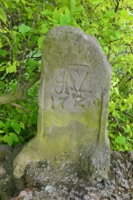
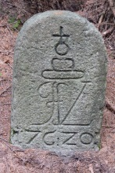
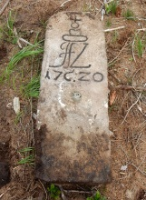
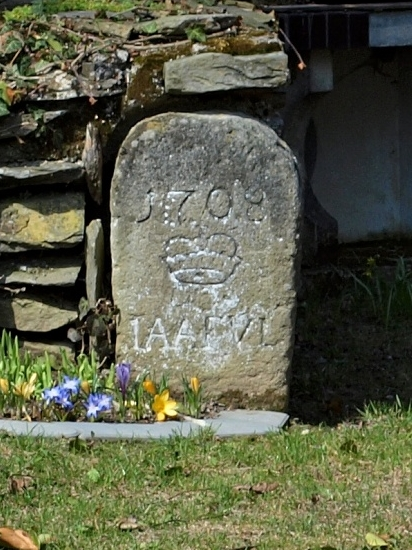

Grenzsteine auf liechtensteinischen Herrschaften
Herrschaft Sternberg (Šternberk) und Karlsberg (Karlovec)
Grenzstein aus dem Jahre 1720 mit einer Krone und den Initialen.

Foto: David Tran
Grenzstein mit der Fürstenkrone, Jahreszahl und Inschrift STERNBERG.

Foto: Alena Hejdová
Grenzstein aus dem Jahre 1729 mit Buchstaben JAFVL = Josef Adam Fürst von Liechtenstein.

Foto: Kamila Ptáčková
Der Grenzstein links aus dem Jahre 1720 trägt eine Krone, einen Stern und Buchstaben AFVL S = Anton Florian von Liechtenstein, Sternberg. Rechts Grenzstein mit der Inschrift HS = Herrschaft Sternberg.


Fotos: Jan Nejezchleb.
Der Grenzstein trägt die Jahreszahl 1708, eine Krone, einen Stern und Buchstaben IAAFVL.
Der Stern war ein Symbol der Herrschaft Sternberg.
IAAFVL = Iohann Adam Andreas Fürst Von Liechtenstein.

Foto: Kamila Ptáčková
Grenzsteine aus dem Jahre 1720 mit einer Krone und den Initialen, die wahrscheinlich AFVL = Anton Florian von Liechtenstein bedeuten.


Foto links: Jindřich Hlaváč. Foto rechts: Petr Vomáčka.
Der Grenzstein trägt die Jahreszahl 1708, eine Krone und Buchstaben IAAFVL = Iohann Adam Andreas Fürst Von Liechtenstein.

Fotos: Vojtěch Krejčí
Der Grenzstein trägt die Nummer 256, die Jahreszahl 1708, eine Krone, einen Stern und Buchstaben IAAFVL.
Der Stern war ein Symbol der Herrschaft Sternberg.
IAAFVL = Iohann Adam Andreas Fürst Von Liechtenstein.

Fotos: Marek Bohuš
{kind=link}
{kind=link}
{kind=link}
{kind=link}